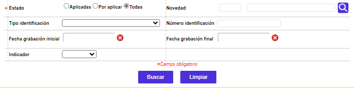
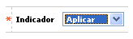

Administración de novedades
Desde este formulario, se permite la aplicación de aquellas novedades que no pudieron ser aplicadas correctamente por errores durante el proceso, o de aquellas que de acuerdo con lo definido en la opción Novedades administrativas la entidad haya determinado que se aplican en batch y no en línea.
Al ingresar al formulario se despliega inicialmente un filtro en el cual el usuario define los criterios de las novedades que quiere seleccionar para aplicación.

Descripción de campos
Estado |
Campo obligatorio en el que debe marcarse: Aplicadas, Por aplicar o Todas, indicándole al sistema la condición o estado de las novedades que se desea consultar. |
Novedad |
En este campo tipo combo en el que se permite seleccionar la Novedad administrativa que se desea consultar. Dependiendo si el formulario se invoca desde el Core o Issuer, este campo muestra respectivamente las novedades tipo persona o las de tipo tarjeta. |
Tipo de identificación |
Campo tipo combo en el cual se puede seleccionar el tipo de documento de identificación asociado a los clientes para los cuales se desea consultar novedades. |
Número de identificación |
En este campo numérico de hasta 16 caracteres se ingresa el número de identificación del cliente para el cual se desea consultar novedades. |
Fecha de grabación inicial |
Campo no obligatorio que, mediante la funcionalidad de un calendario, permite indicar la fecha a partir de la cual se grabaron las novedades que se desea consultar. |
Fecha de grabación final |
Campo no obligatorio que, mediante la funcionalidad de un calendario, permite indicar la fecha final o hasta la cual se grabaron las novedades que se desea consultar. |
Indicador |
En este campo tipo combo se puede seleccionar entre Error, No aplicar o Aplicar el estado de las novedades que se desea consultar. |
Una vez que se han ingresado los criterios a utilizar para seleccionar las novedades que se desea gestionar, mediante el botón buscar el sistema efectúa la consulta y despliega un formulario con los resultados
Descripción de campos
Tipo novedad |
Despliega la abreviatura asociada a cada tipo o clase de novedad, parametrizadas mediante la opción Novedades administrativas. |
Cliente |
En este campo se muestra el nombre del cliente a quien corresponde la novedad. |
Clase |
Campo de salida en el que se indica si la novedad es Nueva es decir que corresponde a la inclusión de información, una Modificación o Eliminación de datos previamente existentes, brindando un criterio adicional para su evaluación, en caso de ser necesario. |
Fecha de grabación |
En este campo se muestra en formato YYYY-MM-DD la fecha específica en la cual se grabó la novedad. |
Fecha de aplicación |
Campo que muestra en formato YYYY-MM-DD la fecha en que se aplicó exitosamente la novedad en el sistema. Difiere de la fecha de grabación para las novedades que presentan errores de datos, o para las que no son de aplicación en línea. |
Estado |
Muestra las opciones Por aplicar o Aplicada, asociada a la novedad, lo que permite diferenciar, posteriormente, las novedades ingresadas al sistema. |
Indicador |
En este campo se muestra el indicador actual de la novedad y que puede ser Aplicada, Por aplicar o Error. |
Mensaje |
Si durante el proceso de aplicación de la novedad se presentó algún error que no permitió su correcta aplicación, en este campo se despliega el mensaje en el cual se indica al usuario la causa de tal evento. |
El formulario contiene los enlaces: actualizar y Detalle
Actualizar: Si el usuario selecciona un registro cuyo estado sea Por aplicar e invoca la opción Actualizar se despliega un formulario con un único campo modificable que es el Indicador.

Descripción de campos
Indicador |
Campo obligatorio tipo combo, en el cual se selecciona entre Aplicar o No aplicar la acción que debe ejecutar el sistema una vez se utilice el botón correspondiente para gestionar la novedad. Para poder aplicar una novedad desde esta opción, el valor de este campo debe ser 'Aplicar' |
Detalle: Si el usuario selecciona un registro e invoca la opción Detalle se puede invocar el formulario a través del cual se capturó la novedad.
Botones especiales
Aplicar novedad seleccionada: una vez solucionada la causal por la que quedó pendiente por aplicar la novedad o "forzar" la aplicación de una novedad de aplicación mediante proceso en batch, se utiliza este botón, el que aplica de manera individual la novedad sobre la que se encuentre el cursor.
Aplicar todas las novedades: aplica bajo el mismo principio o criterio que el definido para el botón anterior, pero a diferencia de este, lo realiza de manera masiva, para todas las novedades contenidas en la consulta hecha y que se encuentren por aplicar bien sea que estén o no visibles para el actor.